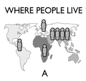

Book - Factfulness - Hans Rosling, Ola Rosling, Anna Rosling
The Gapminder Test
Before I start commenting on Factfulness I would like you to do the gapminder online test. The book starts the same way, asking you to answer the questionnaire.
How did you perform? If it was bad, do not worry. World leaders who should have more context about these trends perform below than a monkey would do (what the author uses to refer to answering randomly the test). The world is better than we think, why do we have such negative thoughts about it?.
Factfulness is one of Bill Gates favorite books. He thinks it’s so important to read it that he decided to give it away to all 2018 American graduates.
As usual, I added all the quotes I found interesting here. Let’s deep dive into Factulness, a book so interesting I read it just in some days.
10 biases
Facts over feelings. That’s the book in three words. Hans shows publicly available data, usually ignored, in eye-catchy graphics to demonstrate how pessimistic we are. Why are we this way?
We, as humans, have 10 different instincts that prevent us from analyzing the world factfully. Is important to know them and to master the ability to disabling them.
1. The Gap Instinct.
The reality is often not polarized at all. Usually, the majority is right there in the middle, where the gap is supposed to be. We tend to divide the countries in developed and non-developed. The author divides them into 4 levels ordered by income per person. Guess which levels are the more crowded? The ones in the middle, 2 and 3.
2. The Negativity Instinct.
Information about bad news is much more likely to reach us. When things are getting better we often don’t hear about them. This gives us a too-negative impression of the world. Things can be bad and improving. Example:
The PIN code of the world is 1-1-1-4. That’s how to remember the map. From left to right, the number of billions, as a PIN code. Americas: 1, Europe: 1, Africa: 1, Asia: 4. (I have rounded the numbers.) Like all PIN codes, this one will change. By the end of this century, the UN expects there to have been almost no change in the Americas and Europe but 3 billion more people in Africa and 1 billion more in Asia. By 2100 the new PIN code of the world will be 1-1-4-5. More than 80 percent of the world’s population will live in Africa and Asia.

Think of the world as a premature baby in an incubator. The baby’s health status is extremely bad and her breathing, heart rate, and other important signs are tracked constantly so that changes for better or worse can quickly be seen. After a week, she is getting a lot better. On all the main measures, she is improving, but she still has to stay in the incubator because her health is still critical. Does it make sense to say that the infant’s situation is improving? Yes. Absolutely. Does it make sense to say it is bad? Yes, absolutely. Does saying “things are improving” imply that everything is fine, and we should all relax and not worry? No, not at all. Is it helpful to have to choose between bad and improving? Definitely not. It’s both. It’s both bad and better. Better, and bad, at the same time.
3. The Straight Line Instinct.
Curves (in data graphics) come in different shapes. Don’t assume it will continue straight.
4. The Fear Instinct.
Frightening things get our attention. Remember these are not necessarily the riskiest. Our natural fears (genetic) make us overestimate these risks.
5. The Size Instinct.
If a lonely number seems impressive. Compare it with another relevant number. Get things in proportion. Example:
I had for some time been appalled by the systematic blaming of climate change on China and India based on total emissions per nation. It was like claiming that obesity was worse in China than in the United States because the total bodyweight of the Chinese population was higher than that of the US population.
6. The Generalization Instinct.
Generalization can’t be stopped but we can check if the use is correct. Look for differences within groups, similarities across groups and differences across groups. Example:
It makes no sense to talk about “African countries” and “Africa’s problems” and yet people do, all the time. It leads to ridiculous outcomes like Ebola in Liberia and Sierra Leone affecting tourism in Kenya, a 100-hour drive across the continent. That is farther than London to Tehran.
7. The Destiny Instinct.
Slow change is still change. Slow changes gradually add up to big changes. Don’t think something (country, culture, etc.) remains constant because the change is small.
8. The Single Perspective Instinct.
Get a toolbox, not a hammer. Single perspective can limit your imagination. Look at problems from different angles.
9. The Blame Instinct.
Blaming an individual often steals the focus from other possible explanations and blocks our ability to prevent similar problems in the future. Resist finding a scapegoat and notice when one is being used,
10. The Urgency Instinct.
Rarely a decision is urgent. Take a breath. Insist on data. Be careful of taking drastic actions.
World future - Economic shift
One of my favorite parts of the book is when the population growth forecast are analyzed:
If the UN forecasts for population growth are correct, and if incomes in Asia and Africa keep growing as now, then the center of gravity of the world market will shift over the next 20 years from the Atlantic to the Indian Ocean. Today, the people living in rich countries around the North Atlantic, who represent 11 percent of the world population, make up 60 percent of the Level 4 consumer market. Already by 2027, if incomes keep growing worldwide as they are doing now, then that figure will have shrunk to 50 percent. By 2040, 60 percent of Level 4 consumers will live outside the West. Yes, I think the Western domination of the world economy will soon be over. People in North America and Europe need to understand that most of the world population lives in Asia. In terms of economic muscles “we” are becoming the 20 percent, not the 80 percent. But many of “us” can’t fit these numbers into our nostalgic minds. Not only do we misjudge how big our war monuments should be in Vietnam, we also misjudge our importance in the future global marketplace. Many of us forget to behave properly with those who will control the future trade deals.
That is some food for thought. How easily we ignore all other countries while we are on top but…for how long? A couple more quotes in the same direction:
In sales and marketing, if you run a big business in Europe or the United States, you and your employees need to understand that the world market of the future will be growing primarily in Asia and Africa, not at home.
In making investment decisions, you need to shake off any naïve views of Africa shaped by the colonial past (and maintained by today’s media) and understand that Ghana, Nigeria, and Kenya are where some of the best investment opportunities can be found today.
Fake news
Nowadays is common to receive all kind of fake news, rumors, clickbait. For this reason, I see even more value in reading this book. I’m pretty sure that with a population that knew more about all this instincts and how to tackle them, some presidential elections would have gone differently.
Conclusion
Easy to read. Interesting, funny, and revealing experiences from the author around the world. Great summaries after every chapter. Do you love data? 100% recommended. Better to read it in a tablet than in a e-reader because of the graphics.